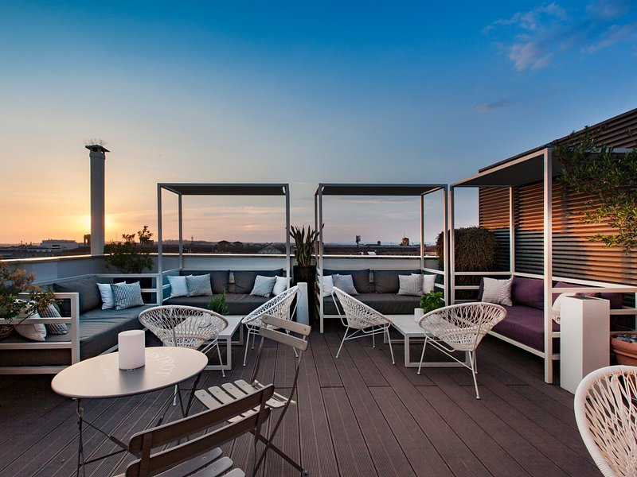

To get a bit closer to the Rome sky, visit Terrazza Cielo Restaurant & Lounge Bar, found on top of The Independent Hotel, located just a short walk from the Termini Train Station. 8 floors above the Eternal City, the modern and elegant rooftop comes surrounded with an amazing 360° view over the wonders of Rome. From the Baths of Diocletian to the Dome of St Peters at the Vatican, and up to the Castelli Romani. Divided in two spaces, Terrazza Cielo Restaurant is the place to go for breakfast with a view, a business lunch, or a stylish dinner. In a refined atmosphere, here you can indulge in fresh Mediterranean cuisine, complemented with an impressive wine list, all served with a side of fantastic vistas. At the more comfy Terrazza Cielo Lounge Bar you can escape the sun under one of the large umbrellas or settle down in the inviting sofas, and enjoy crafted cocktails, aperitifs, conversations, live music and sunset views.
